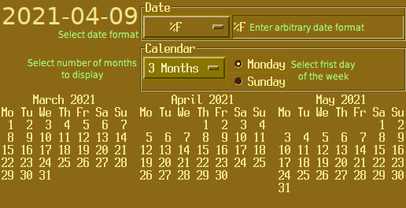

Welcome to DateTime App’s documentation!¶
Contents:
1import sys
2import calendar
3
4'''
5m = calendar.month(int(sys.argv[1]), int(sys.argv[2])).split('\n')
6print(f'.. table::{m[0].strip()}\n')
7print(' == == == == == == ==')
8print(f' {m[1]}')
9print(f"{'\n '.join(m[2:])}", end='')
10print(' == == == == == == ==')
11'''

Contents:
This simple application allows you to test various time.strftime() style date formats and display one, three or twelve month calendar.
See